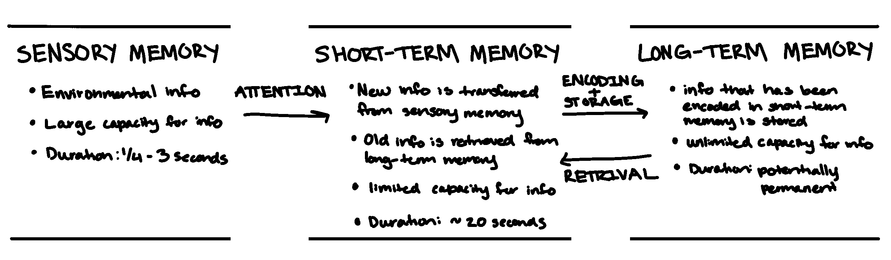
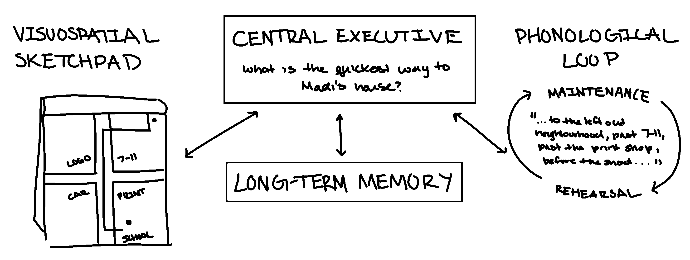
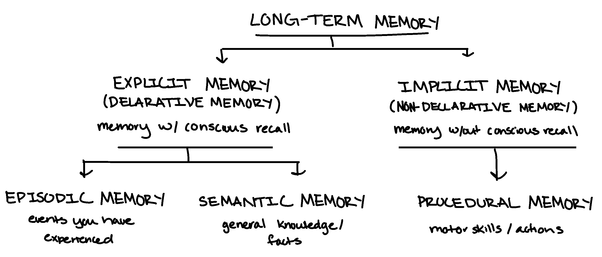

Slides
Part 1: Stages and Type of Memory
The Stage Model of Memory
Memory is the mental processes that enable you to encode, retain, and retrieve information over time. This definition refers to three mental processes:
- Encoding: the process of transforming info into a form that can be entered into and retained by the memory system
- Storage: the process of retaining info in memory so that it can be used at a later time
- Retrieval: the process of recovering stored info into conscious awareness
No single model fully captures all aspects of memory. However, a widely accepted framework is the stage model of memory
The stage model of memory describes memory as consisting of three distinct stages: sensory memory, short-term memory, and long-term memory. It is based on the idea that info is transferred from one memory stage to another

Sensory Memory
the stage of memory that registers info from the environment and hold it for a very brief period of time
- sesnory impressions are registered very briefly so that they overlap slightly with one another
- therefore, we perceive the world as continuous, rather than as a series of disconnected visual images or disjointed sounds
- Capacity: very large, registers a detailed record of a sensory experience
- Duration: very brief, a few seconds at most (varies by type), it holds info long enough to be processed for its basic physical characteristics
- Types of sensory memory: many researchers believe there is a different sensory memory for each sense. Visual and auditory have been the most thouroughly studied
- Visual sensory memory (iconic memory): it is the brief memory of an image or icon
- Duration: ~ 1/4 to 1/2 of a second
- measured first by George Sperling using partial report technique
- Auditory sensory memory (echoic memory): a brief memory that is like an echo
- Duration: lasts up to 3 to 4 seconds
- When we pay attention to certain impression in sensory memory, we select them for further processing and transfer them to our short-term memory
Short-Term Memory (STM)
the active stage of memory in which info is stored for up to about 20 seconds
- it provides temporary storage for info transferred from sensory and long-term memory
- it is the "workshop" of consciousness
- where new sensory info and info from long-term memory are integrated and processed consciously
- Duration: ~20 seconds
- info loss may be due to decay or interference from new or competing info
- Maintenance rehearsal: mental or verbal repitition of info
- maintains it beyond the usual 20-second furation of short-term memory
- Capacity:
- describe by George Miller as "The Magical Number Seven, Plus or Minus Two" items, or bits of info
- when the capacity is reached, new info will displace, or bump out, currently held info
- current research suggests that the true "magical number" may be four, plus or minus one
- Chunking: increases the amount of info that can be held in short-term memory by grouping related items together into a single unit
- often involves the retrieval of meaningful info from the long-term memory
- ex: social security numbers: XXX-XX-XXXX
- Encoding: an important function in STM, the transformation of new info into a form that can be retrieved later
- once encoded, an unlimited amount of ingo can be stored in long-term memory, which has different memory systems
Long-Term Memory
the stage of memory that represents the long-term storage of info
- Capacity: limitless
- Duration: longer than 20 seconds; potentially a lifetime
Working Memory vs Short-Term Memory
while often used interchangeably with STM, researchers differentiate STM as simple temporary storage of info, and working memory as involving temporary storage and active, conscious manipulation of info needed for complex cognitive tasks, such as reasoning, learning, and problem-solving
- According to Baddeley's model, it consists of the phonological loop, the visuospatial sketchpad, and the central executive
- Phonological loop: specialized for auditory material, such as lists of numbers or words
- Visuospatial sketchpad: specialized fro spatial or visual material, such as the layout of a room or city
- Central executive: controls attention, integrates info, and manages the activities of the phonological loop and visuospatial sketchpad

Types of Long-Term Memory
Long-Term Memory stores different types of info:
- Procedural memory: skills, operations, and actions
- Episodic memory: particular events, including the time and place that they occured
- Semantic memory: general knowledgem conceptsm facts, and names
studies of patients with amnesia idicate that long-term memory is composed of two separate, but interacting, subsystems (dimensions):
- Explicity (declarative) memory: memory with awareness, info or knowledge that can be consciously recollected
- Episodic information: events
- Sematinc information: facts, general knowledge, school work
- Implicit (non-declarative) memory: memory without awareness, information or knowledge that affects behavior or tasks performance but cannot be consciously recollected
- Procedural memories: motor skills, actions

Review Questions:
- Which of the following is NOT one of the three mental processes involved in memory?
- Transformation
- Which What is the main purpose of sensory memory
- To register sensory impressions for a brief period
- What is the approximate duration of visual sensory memory (iconic memory)?
- 1/4 to 1/2 of a second
- Which of the following describes the main difference between working memory and long-term memory?
- Long-term memory stores information permanently, while working memory temporarily holds and manipulates information
- Which of the following strategies helps extend the duration of information in short-term memory?
- Maintenance rehearsal
- According to George Miller, what is the typical capacity of short-term memory?
- 7 plus or minus 2 items
- What is the process called when related items are grouped together into a single unit to increase short-term memory capacity?
- Chunking
- How does working memory differ from short-term memory (STM)?
- STM refers to temporary storage, while working memory involves both storage and conscious manipulation of information
- Which type of long-term memory involves recalling specific events, including the time and place they occurred?
- Episodic memory
- What type of memory includes general knowledge, facts, and concepts?
- Semantic memory
- What distinguishes explicit (declarative) memory from implicit (nondeclarative) memory?
- Explicit memory is conscious recollection, while implicit memory affects behavior without conscious awareness
- Which of the following is an example of procedural memory?
- Knowing how to ride a bicycle
Part 2: Factors Affecting Memory
Factors Influencing how Memories are Encoded, Stored, Retrieved, or Forgotten
Factors that affect Encoding
the transformation of new info into a form that can be retrieved later; strategies for encoding:
- Maintenance rehearsal: repeating information over and over can encode info sufficiently for storage in LTM
- but this is not the most efficient or effective form on encoding. better strategies below.
- Elaborative rehearsal: focusing on the meaning of the info
- ex: you wold use your existing knowledge to general examples or make connections, try to explain a concept in your own words
- Self-reference effect: applying info to self
- Visual imagery: using vivid images to enhance encoding
Factors that affect Storage
scientists do not fully understand the organization of info in LTM, however, research has shown that it is clustered and associated:
- Clustering: organizing items into related groups during recall from long-term memory
- Semantic network model: there are several models of how info is organized, but this is the best known; a model that describes units of info in LTM as being organized in a complex network of assocations
- when a concept is activated in the semantic network, it can spread in any number of directions, activating other associations in network
- Ex: the word "red" might activate "blue" (another color), "apple" or "fire truck" (objects that are red), or "alert" (as in the phrase "red alert")
Factors that affect Retrieval
the process of recovering info stored in memory so that we are consciously aware of it
most often, our ability to retrieve info depends upon the availability of retrieval cues
- Retrieval cue: a clue, prompt, or hint that help trigger recall of a given piece of info stored in the long-term memory
- Retrieval cue failure: is the inability to recall long-term memories because of inadequate or missing retrieval cues. example of retrieval failure:
- Tip-of-the-tongue (TOT): involves the sensation of knowing that specific info is stored in long-term memory, but being unable to retrieve it
- people have about one TOT experience per week and it becomes mroe common among older adults
- people can almost always dredge up a partial response, such as a the first letter, however, the partial response is not always accurate
- ~90% of TOT experiences are eventually resolved, often within a few minutes
- TOT occurs with ASL users at a tip-of-the-fingers experience
- TOT illustrates that retrieval is not an all-or-nothing process
- Testing Retrieval
- Recall: test of LTM that involves retrieving memories without cues; also termed free recall (e.g., essay test)
- Cued recall: test of LTM that involves remembering an item of info in response to a retrieval cue (e.g., fill in the black test)
- Recognition: test of LTM that involves identifying correct info from a series of possible choices (e.g., multiple choice test)
- Serial position effect: tendency to remember items at the beginning and end of a list better than items in the middle; there are two parts to the serial position effect
- Primacy effect: the tendency to recall the first items in a list
- Recency effect: the tendency to recall the final items in a list
- The encoding specificity principle: states that when conditions of information retrieval are similar to the condition of information encoding, retrieval is more likely to be successful
- conext effect: the tendency to recover info more easily when the retrieval occurs in the same setting as the original learning of the info
- mood congruence: refers to the phenomenon in which a given mood tends to evoke memories that are consistent with that mood
- Distinctiveness: info and experiences that are unsusual & unique stand out in our memories
- we retrieve them more easily
- does this mean that they are more accurate? researchers have studied "flashbulb memories" to address this question:
- Flashbulb memory: the recall of very specific images or details surrounding a vivid, rare, or significant personal event; details may or may not be accurate.
- flashbulb memory research: flashbult memory vs. control memory were compared ofver the course of a year
- Talarico & Rubin (2003,2007) studied the memories of Duke University students regarding the terrorist attacks of 9/11/2001, beginning the study on 9/12/2001
- results: Flashbulb memories functioned much more like ordinary memories over time; Both showed similar rates of decay over time; however, people reported a higher degree of subjective confidence in the accuracy of flashbulb memories
Factors that affect Forgetting
the inability to recall info that was previously available
- German psychologist Hermann Ebbinghaus began the scientific study of forgetting. He used himself as a research subject to study how much info is forgotten after different lengths of time
- he memorized lists of nonsense syllables, such as: ROH and LEZ
- he tested his recall after varying lengths of time
- he plotted his reults - The forgetting curve
- much of what we forget is lost relatively soon after we originally learned it
Ebbinghause provided an excellent description of forgetting, but he did not explain it. The question remains, "Why do we forget?"
- Encoding failure: one of the most common reasons for forgetting occurs when info is not encoded initially into LTM
- Absentmindedness: may be due to divided attention at the time on encoding
- Prospective memory error: failure to remember what needs to be done in the future
- due to retrieval cue failure
- setting reminders can provide retrieval cues
- Decay Theory: when a new memory is formed, it creates a distinct structural or chemical change in the brain (memory trace); memory traces fade away over time as a matter of normal brain processes
- challenges:
- some research has shown the info can be remembered decades after it was originally learned
- Ebbinghause theorized that the rate of forgetting decreases over time
- Interference Theory: forgetting is caused by one memory competing with or replacing another; this occurs oftens when the info is similar; two types of interference:
- Retroactive interference: a NEW memory interferes with remembering OLD info
- Proactive interference: an OLD memory interferes with remembering NEW info
- Motivated forgetting: when an undesired memory is held back from awareness
- Suppression: conscious forgetting (e.g., trying to block it out, distract yourself, etc.)
- Repression: unconscious forgetting
- based on Friud's theory taht psychologically threatening emotions, conflicts, and urges are blocked from consciousness. Frued beleived this repressed material would unconsciously influence the individual
- controversial and difficult to test scientifically
Malleability of Memories
memories can be easily distorted so that they contain inaccuracies; confidence in a memory is no guarantee that the memory is accurate
- memories are not recorded; they are actively constructed and reconstructed every time they are recollected
- memory details change over time
- without awareness, details can be added, substracted, exaggerated, or downplayed
Elizabeth Loftus' own experience inspired her research to understand memory. Loftus & Palmer (1974): participant viewed a film of an accident and were then asked to remember details. Critical Question: About how fast were the cars going when they contacted each other? (IV = word used, DV = estimated speed)
- Speed Estimates Based on Question Phrasing: the following data shows how the specific verb used to describe a car accident influenced the average speed estimated by witnesses:
- Smashed: 41 mph
- Collided: 39 mph
- Bumped: 38 mph
- Hit: 34 mph
- Contacted: 32 mph
- the data demonstrated a clear 9 mph difference between the most aggressive verb ("smashed") and the most neutral verb ("contacted"), suggesting that word choice significantlty impacts human memory and perception
- a week later, "Did you see any broken glass?" Although there was non, those who heard the word smashed, were more likely to say, "Yes."
- Misinformation effect: a memory-distortion phenomenon in which people's existing memories can be altered by exposing them to misleading info
Misinformation effect
a memory-distortion phenomenon in which people's existing memories can be altered by exposing them to misleading info
Schemas
organized clusters of knowledge and info about particular topics
- useful in forming new memories; enables quick integration of new experiences into existing knowledge
- can also contribute to memory distortions
- we remember obkects and events as we expect them to be, not as they actually are
Source Confusion
a memory distortion that occurs when the true source of the memory is forgotten
- A memory can be attributed to the wrong source
False memory
a distorted or fabricated recollection of something that did not actually occur
- feels completely real and is often accompanied by all of the emotional impact of the real memory
- The "Lost in the Mall" study by Loftus & Pickrell (1995); 24 participants were given descriptions of 4 early childhood events (3 real stories obtained from parents, and 1 pseudo-event (lost in the mall)), participants read the descriptions and reported all they could remember and returned on 2 subsequent occasions to again recount the descriptions:
- by the final interview, 6 of the 24 had created false memories
- a variety of studies have created false memories fro events that never happened by asking participants to remember real events and image pseudoevents. THis research strategy has been dubbed the lost-in-the-mall technique
- psychologists Julia Shaw and Stephen Porter (2015) showed that they could be created, and relatively easily. Just 3 40-minute sessions of suggestive questioning were sufficient to convince fully 70% of participants that they had committed a serious crime (assault, assault with a weapon, or theft) during asolescence. The memories themselves were vivid and rich in complex detail
Factors Contributing to False Memories:
- Misinformation effect: when erroneous info is received after an event, leading to distorted or false memories of that specific event
- Schema distortion: the tendency for a person to fill in missing memory details with info that aligns with their preexisting knowledge or expectations
- Source confusion: forgetting or misremembering the original, true source of a particular memory
- False familiarity: increased feelings of familiarity that arise from repeatedly imagining the event
- Blending fact and fiction: using vivid, authentic detials to increase the legitimacy and believability of a false event
- Suggestion: the use of hypnosis, guided imagery, or other highly suggestive techniques that can influence memory recall
Review Questions:
- What is the process called when new information is transformed into a form that can be retrieved later?
- Encoding
- Which of the following is NOT an efficient strategy for encoding information into long-term memory?
- Maintenance rehearsal
- What is elaborative rehearsal?
- Focusing on the meaning of information to make connections and generate examples
- What is the semantic network model?
- A model describing information in long-term memory as being organized in a network of associations
- What type of memory test involves identifying the correct information from a series of possible choices?
- Recognition
- According to the encoding specificity principle, when is retrieval of information more likely to be successful?
- When the conditions of retrieval are similar to the conditions of encoding
- What does the context effect suggest about memory retrieval?
- We tend to recall information better when in the same setting where it was learned
- What did research by Talarico and Rubin (2003, 2007) reveal about flashbulb memories?
- Flashbulb memories and ordinary memories both decay at similar rates over time
- What did Hermann Ebbinghaus' forgetting curve demonstrate?
- Most forgetting occurs relatively soon after learning
- Which of the following is an example of retroactive interference?
- Forgetting an old phone number after learning a new one
- Which type of forgetting occurs when a person consciously tries to block out a memory?
- Suppression
- What is the misinformation effect?
- A memory distortion where misleading information alters an existing memory
- What is a schema in the context of memory?
- A cluster of knowledge and information used to quickly integrate new experiences
- What does the “Lost in the Mall” study by Loftus & Pickrell demonstrate?
- False memories can be created by suggesting events that never occurred
Part 3: Memory Disorders
Amnesia
severe memory loss
Retrograde amnesia
inability to remember past episodic info
- backward-acting amnesia
- common after head injury; interrupted consolidation
- Memory consolidation: gradual, physical process of converting new long-term memories to stable, enduring memory codes
Anterograde amnesia
loss of memory casued by the inability to store new memories
- forward-acting amnesia
- related to hippocampus damage
Dementia
progressive deterioration and impairment of memory, reasoning, and other cognitive functions as a result of disease, injury, or substance abuse
Alzheimer's disease (AD)
the most common cause of dementia; a progressive disease that destroys teh brain's neurons, gradually impairing memory, thinking, language, and other cognitive functions, resulting in the complete inability to care for oneself
- cuase is unknown
- the brains of people with AD show an abnormal buildup of protein plaques (dense deposits of protein and other cell materials outside and around neurons) and fibrous tangles (twisted fibers that build up inside neurons)
- early stage is characterized by mild impairments such as forgetting names of familiar people or the location of familiar palces; forgetting to do things
- later stages are characterized by severe impairments, including the inability to care for self, recognized loved ones, or communicate in any meaningful way
Review Questions:
- What is amnesia?
- Severe memory loss
- Which type of amnesia involves the inability to remember past episodic information?
- Retrograde amnesia
- Retrograde amnesia is often caused by which of the following?
- Interrupted memory consolidation
- What is the main characteristic of anterograde amnesia?
- Inability to store new memories
- Which part of the brain is most often associated with anterograde amnesia?
- Hippocampus
- What does Henry Molaison’s case (H.M.) suggest about the role of the hippocampus in memory?
- It encodes new memories and transfers them to long-term storage
- Dementia is best described as which of the following?
- A progressive deterioration of memory and cognitive functions
- What is the most common cause of dementia?
- Alzheimer’s disease
- What is a characteristic feature of Alzheimer's disease?
- Abnormal buildup of protein plaques and fibrous tangles in the brain
- In the early stages of Alzheimer’s disease, people may experience which symptom?
- Mild impairments, such as forgetting names or places